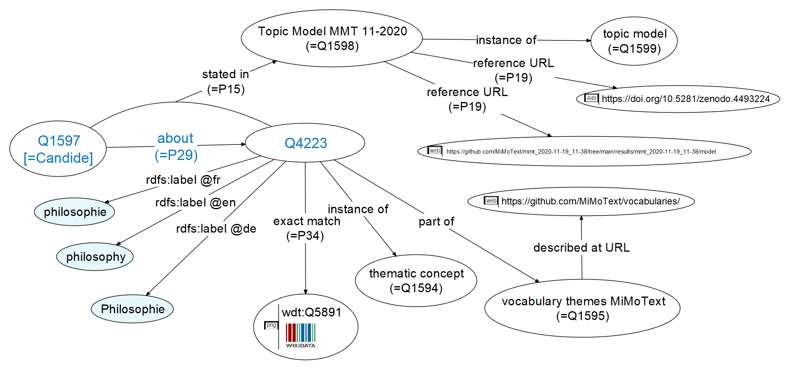
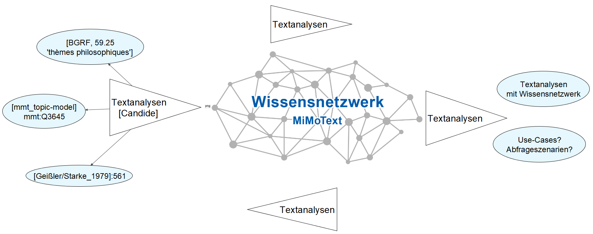
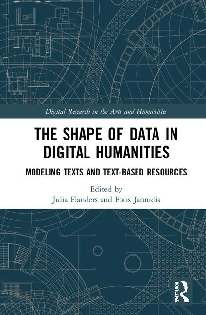

# Pour une histoire littéraire ouverte et en réseau: le projet Mining and Modeling Text <img height="60" data-src="img/basics/mimotext-logo.png"> <br/> <hr/> <p>Christof Schöch,<br/>avec des contributions de toute l'équipe</p> <br/> <p><a href="https://mimotext.uni-trier.de/en">https://mimotext.uni-trier.de/en</a></p> <p><strong><emph>Sorbonne Université, Paris</emph> | 04.04.2023</strong></p> <hr/> <img height="50" data-src="img/basics/tcdh-slim.png"> <img height="50" data-src="img/basics/uni-trier.png"> <img height="50" data-src="img/basics/mwrlp.svg"> :: - Bonjour et bienvenu(e)s à cette conférence - Le sujet aujourd'hui: les linked open data et l'histoire littéraire - Partager nos expériences dans un projet collaboratif à l'université de Trèves - Collaboration de NLP, informatique, études littéraires, humanités numériques - C'est un projet en cours, qui dure encore jusqu'à la fin de l'année - C'est coordonné par moi au Trier Center for Digital Humanities - Le financement, sur 4 ans, vient de l'état de Rhénanie-Palatinat -- ## Structure 1. [Introduction – L'histoire littéraire en réseau](#/2) 3. [Mining - L'extraction d'informations](#/3) 4. [Modeling - La représentation des informations](#/4) 5. [Conclusion](#/5) :: - Je commence par une introduction au projet et un peu de contexte - Mining: comment nous obtenons les informations à partir des sources - Modeling: comment nous représentons les informations, - dans le but de les mettre en réseau, de les relier entr-eux - "Mining" et "Modeling" se passent cependant en parallèle, pas l'un après l'autre -- ## (1) Introduction – <br/>L'histoire littéraire en réseau --- #### Contexte: Trier Center for Digital Humanities <a href="https://tcdh.uni-trier.de/en"></a> - Centre de recherche en humanités numériques fondé en 1998 - Trois domaines de recherche - Édition de textes et lexicographie numériques - Infrastructures et outils de recherche - Études littéraires et culturelles computationelles - En savoir plus: https://tcdh.uni-trier.de/en :: - Projet est mené au TCDH - TCDH: Fondée en 1998, par Kurt Gärtner; - Dirigé par Claudine Moulin depuis 2003; avec moi depuis 2017. - Les trois domaines de recherche principaux - Environ 30 chercheuses et chercheurs - Bien plus de cent projets menés à bien --- #### MiMoText: première approche <a href="img/overview_eng.jpg"><img height="450" data-src="img/overview_eng.jpg"></a> <br/><a href="https://mimotext.uni-trier.de/en">https://mimotext.uni-trier.de/en</a> :: - Objet d'étude: le roman francais du 18e siècle; - trois sources d'informations - metadonnées bibliographiques, source: BGRF (années 1970s) - savoirs établis par l'historiographie littéraire, source: publications scientifiques (sur l'histoire littéraire) - propriétés des textes primaires, source: un corpus de romans - Le but général: - extraire des informations des ces sources (hétérogènes) - les modéliser en linked open data (homogène) - les mettre en réseau sous forme d'une instance Wikibase propre - Tout est entièrement ouvert: corpus, méthodes, publications, ressources, résultats. - Mais quelles informations inclure ? --- #### Qu'est-ce que l'historiographie littéraire ? - Objectifs <!-- .element: class="fragment" data-fragment-index="1" --> - Collectionner et documenter des faits (?) sur l'histoire littéraire - En déduire l'évolution de l'histoire littéraire - En déduire des explications pour cette évolution <br/><br/> - Principes d'organisation <!-- .element: class="fragment" data-fragment-index="2" --> - Nations / langues, périodes, mouvements, genres, auteurs - Similarités et différences - continuités et ruptures <br/><br/> - Explications pour l'évolution littéraire <!-- .element: class="fragment" data-fragment-index="3" --> - contexte culturel et socio-historique - dynamique interne du système littéraire - production continue d'innovation / d'intérêt :: - Question fondamentale, à laquelle nous revenons constamment - Expliquer les points sur les slides - Au final: très peu d'accord sur les principes - Et surtout : très peu d'accord sur les informations fondamentalement pertinentes de l'histoire littéraire - Alors, on se demande: - Quelles informations devrait-on relever ? - Quelles informations pouvons-nous relever ? - Une source d'inspiration pourraient être d'autres projets similaires --- #### Projet précurseur : la BDHL - Henri Béhar (Paris III), à partir de 1985 (!) - 500 auteurs, 2000 oeuvres - métadonnées, dont genres / sous-genres et canonicité :: - Henri Béhar, pionnier des humanités numériques - BDHL comme précurseur - auteurs, oeuvres, genres / sous-genres, thèmes, éditeurs, prix - interactif, statistique - particularité: données sur la canonicité à travers les manuels scolaires et universitaires - Mais c'est aussi une sorte d'avertissement - très focalisé sur les oeuvres canoniques (500 auteurs, 2000 oeuvres) - => comment assurer qu'une telle ressource reste pertinente par rapport aux études littéraires telles qu'elles évoluent ? - pas ouvert dans le sens du travail collaboratif - => comment assurer que la base reste ouverte au contexte des données existants ailleurs (LOD, donnés d'autorité) - n'est plus maintenu, plus fonctionnel - => Comment intégrer la ressource dans des infrastructures plus générales --- #### Projets voisins : histoire du livre / de la littérature <a href="img/mediate.png"><img height="300" data-src="img/mediate.png"></a> - MPCE: Mapping Print, Charting Enlightenment (Simon Burrows, Univ. of Sydney) - MEDIATE: Measuring Enlightenment. Disseminating Ideas, Authors and Texts in Europe, 1665-1830 (Alicia Montoya, Radboud University) - MODERN: Modelling Enlightenment. Reassembling Networks of Modernity through data-driven research (Glenn Roe, Paris-Sorbonne) <!-- .element: class="fragment" data-fragment-index="1" --> :: - projets très pertinents, axés plus sur l'histoire du livre, et l'époque des Lumières - mais développant bien sur des bases de données avec potentiellement beaucoup d'informations pertinentes pour MiMoText aussi. - Cependant, pas vraiment pensés dans l'esprit de la science ouverte (plus pour MEDIATE que pour MPCE, peut-être) - MPCE: tjs pas disponible; MEDIATE: version préliminaire, seulement avec un compte. - et MODERN, bien sûr ! On verra bien ce qu'on pourrait faire ensemble. --- #### Quelles informations sont pertinentes et disponibles ? - Ressources bibliographiques <!-- .element: class="fragment" data-fragment-index="1" --> - Métadonnées : auteurs, oeuvres, éditeurs, etc. (histoire du livre) - Mots-clés (dans la BGRF): lieu, thèmes, protagonistes, tonalité <br/><br/> - Historiographie littéraire <!-- .element: class="fragment" data-fragment-index="2" --> - Résumés portant sur l'histoire racontée, les thèmes - Description / classements en terme de genre, période, style, etc. - Déclarations sur les relations entre auteurs, entre oeuvres - Jugements de valeur sur les auteurs et les oeuvres <br/><br/> - Romans <!-- .element: class="fragment" data-fragment-index="3" --> - la longeur des textes - lieu de l'action (NER) - les noms des personnages (NER, réseaux) - les thèmes (Topic Modeling) - la tonalité (Sentiment Analysis) - la proportion du discours direct des personnages (ML) - la similarité entre les romans (stylométrie) - etc. :: - Structuré selon les trois axes du projet - Une certaine tension entre ce qui est pertinent et ce qui est possible - Cela devient intéressant, quant on a plusieurs sources d'informations pour le même type d'informations - Exemples: - Thèmes selon publications scientifiques vs. Topic Modeling; - lieux de l'action selon BGRF vs. Named Entity Recognition sur les romans --- #### Objectifs du projet - Notre objectif : "Wikidata pour l'histoire littéraire" <!-- .element: class="fragment" data-fragment-index="1" --> - Un système d'information sur l'histoire littéraire - Rôle central des taxonomies, ontologies, fichiers d'autorité - Basé sur le LOD, avec interface explorative et SPARQL-endpoint - À la différence de Wikidata : <!-- .element: class="fragment" data-fragment-index="2" --> - Beaucoup plus focalisé sur un domaine (roman francais 1750-1800) - Meilleure couverture pour ce domaine - Plus grande densité des assertions pour ce domaine - Basé sur une modélisation explicite des données - Facilitér des scénarios d'analyse poussés :: - Le challenge : comment obtenir et relier ces informations? - Pour réaliser ces objectifs ? - Nous le verrons maintenant - obtenir => Mining - relier => Modeling -- ## (2) Mining - <br/>L'extraction d'informations --- #### Axe 1 : La _Bibliographie du genre romanesque français_ <a href="img/bgrf-Candide.png"><img height="400" src="img/bgrf-Candide.png"></img></a> - Martin / Mylne / Frautschi: <em>Bibliographie<br/> du genre romanesque français, 1751-1800</em>, 1977 - Version en RDF: https://doi.org/10.5281/zenodo.3401428 (2019) :: - Bibliographie presque exhaustive, établie sur plusieurs années - L'image montre une entrée parmi les 2500 entrées; Candide de Voltaire - (Cet ouvrage va revenir plusieurs fois dans la suite de la présentation) - On voit un peu quelles informations sont contenues dans la bibliographie - métadonnées bibliographiques - informations sur le contenu: protagonistes, lieux, thèmes, histoire, tonalité. - histoire éditoriale: rééditions - On a numérisé et modélisé tout cela en RDF en 2019. --- #### Combien d'informations se trouvent dans la BGRF ? * Quelques statistiques (sur base de notre version en RDF) <!-- .element: class="fragment" data-fragment-index="1" --> - ~1100 auteur(e)s différent(e)s - ~2600 entrées (romans) - ~58.000 pièces d'information (22 / roman) <br/><br/> - Autres informations disponibles <!-- .element: class="fragment" data-fragment-index="2" --> - ~720 romans à la première personne - ~920 romans à la troisième personne - ~2210 entrées avec des informations sur le contenu (les mots-clés) :: - Expliquer d'abord les statistiques - Quelques remarques supplémentaires - La bibliographie représente la fondation du projet: les auteurs et les ouvrages. - C'est une bibliographie exhaustive: pas de limitations qui dépendent du prestige ou de la notoriété des auteurs (autre que le processus historique) - Quand nous relevons d'autres informations, elles sont toujours reliées à ces auteurs et ouvrages; le coeur du réseau, en quelque sorte --- #### Axe 2 : Les textes littéraires (romans) - Corpus de romans français du dix-huitième siècle (1751-1800) <!-- .element: class="fragment" data-fragment-index="1" --> - Dirigée par Julia Röttgermann - Disponible en ligne: https://github.com/mimotext/roman18 <br/><br/> - Analyses du corpus <!-- .element: class="fragment" data-fragment-index="2" --> - Topic Modeling, pour obtenir les thèmes les plus pertinents de chaque roman - Named Entity Recognition, pour obtenier les lieux de l'action - etc. :: - Corpus établi par Julia Röttgermann. - Source de 'statements' à travers plusieurs analyses --- #### Le corpus de romans français du 18e siècle (1751-1800) <img height="400" src="img/roman18.jpg"></img> <br/><p>Corpus de romans français du dix-huitième siècle (1750-1800)<br/>dirigée par Julia Röttgermann. </p> :: - Différentes sources, du TEI tout prêt au livre à scanner - Double keying pour un groupe de roman, modèle OCR adaptée pour OCR4all. - Disponible ouvertement sur Github et Zenodo - Effort de suivre les principes FAIR - Améliorations encore en cours, mais en principe, le corpus est prêt --- #### Topic Modeling - Quelques résultats <a href="img/pilot_mod200_fr_10_500_expStop.html"><img height="500" src="img/pyldavis.png"></img></a> :: - Quelques topics: famille, philosophie, amour, monarchie, sexualité, lire/écrire, mort, etc. - Pour chaque roman, nous retenons les 5 topics avec la plus grande probabilité (c'est arbitraire, mais utile) - Le modèle entier est aussi disponible en ligne, bien sûr. --- #### Deux topics majeurs <br/> "monarchie" "amour" <br/><img height="250" src="img/topic_002.png"></img> <img height="250" src="img/topic_009.png"></img> - Pour chaque roman du corpus : les 5 topics principaux - Les étiquettes viennent d'un vocabulaire contrôlée multilingue :: - Tout d'abord, il faudrait dire que les topics != thèmes - Cependant, les topics expriment quand même les préoccupations thématiques des romans, y inclus le personnel, le setting etc. - Chaque topic a besoin d'une étiquette, c'est un processus manuel - L'attribution des étiquettes s'appuie sur un vocabulaire contrôlée de termes - Le vocabulaire est dérivée du Dictionnaire européen des Lumières - Nous l'avons complété et traduit en allemand et anglais (multilingue!) - En plus de l'étiquette, on peut voir les mots les plus probables de chaque topic; - Pour plus de transparende, le modèle entier est disponible aussi --- ### Axe 3: L'historiographie littéraire - Objectif : obtenir des assertions pertinentes de l'historiographie littéraire <!-- .element: class="fragment" data-fragment-index="1" --> - Dans une première étape : des chapitres / panoramas sur le roman du 18e <!-- .element: class="fragment" data-fragment-index="2" --> - Une approche qui allie annotation manuelle et machine learning <!-- .element: class="fragment" data-fragment-index="3" --> - Des guides d'annotation (en lien avec le modèle de données) - Une annotation manuelle (assertions + données d'entraînement) - En s'appuyant sur une instance INCEPTION reliée à la Wikibase - (Ensuite : entraînement d'un algorithme de reconnaissance automatique) :: - on voit ici un peu la complexité de la tâche - le guide d'annotation dépend du modèle des données - mais le modèle des données dépend aussi de l'experience d'annotation - les assertions annotéés peuvent être rentrés dans la Wikibase - mais elles doivent servir aussi comme données d'entraînement - (C'est une étape sur laquelle on travaille encore) --- #### Exemple d'une annotation au niveau 'Named Entity' <a href="img/inception_Candide-disambiguation.png"><img height="350" src="img/inception_Candide-disambiguation.png"></img></a> - Annotation des auteurs et des ouvrages (sujet ou objet dans les assertions) - Entités sont liés à des fichiers d'autorité (MiMoTextBase / Wikidata) :: - L'annotation relie les entités aux fiches d'autorité - (cela peut être notre instance Wikibase, ou bien Wikidata plus généralemnet) - elle contient les auteurs et oeuvres de la BGRF essentiellement - Cela permet, entre autres, de désambiguiser les entités. --- #### Annotation au niveau 'Predicate' <a href="img/inception_genre.png"><img height="300" src="img/inception_genre.png"></img></a> - Dans l'exemple, c'est le prédicat "hasGenre" qui est utilisé - Sujet: Bélisaire (Wikidata: Q5005038) * Objet: "novel / roman" (Wikidata: Q8261) :: - "hasGenre" est un prédicat défini dans notre propre ontologie - Dans Wikidata, il y bien "genre" (Q483394) et "literary genre" (Q223393), mais c'est une entité, pas un prédicat -- ## (3) Modellierung - Repräsentation und Vernetzung von Wissen ## (2) L'histoire littéraire<br/>pensée comme un réseau --- ### Modellierungsansatz: Linked Open Data (LOD) <img height="350" data-src="img/rdf11-primer-example-graph.jpg"> Quelle: <br/><a href="https://www.w3.org/TR/rdf11-primer/">https://www.w3.org/TR/rdf11-primer/</a> :: --- ### Grundprinzip * Linked Open Data <!-- .element: class="fragment" data-fragment-index="1" --> * große Menge einfacher Aussagen * Subjekt, Prädikat, Objekt (Tripel) * zentrale literaturgeschichtliche Subjekte <!-- .element: class="fragment" data-fragment-index="2" --> * Personen (Autor:in, Herausgeber:in, Verleger:in etc.) * Publikationen (Primärtext, Fachliteratur etc.) :: - in Geschichte bspw. "Ereignisse" als relevante Subjekte (?) --- ### Aussagetypen (1) * person AUTHOR_OF publication * publication PLACE_OF_PUBLICATION place * publication DATE_OF_PUBLICATION year :: - Aussagen hier erst einmal konzeptionell repräsentiert; - hier bewusst erstmal "einfache Metadaten", für die es kein Einverständnis oder Konsensbildung in einer community braucht - im Folgenden Eingehen auf Formalisierungsfragen --- ### Aussagetypen (2) * publication NARRATIVE_LOCATION place <!-- .element: class="fragment" data-fragment-index="1" --> * publication EXTENT_WORDS number of words <!-- .element: class="fragment" data-fragment-index="2" --> * person/publ. DESCRIBED_AS (adjective | noun) <!-- .element: class="fragment" data-fragment-index="3" --> * person/publ. SIMILAR_TO person/publ. <!-- .element: class="fragment" data-fragment-index="4" --> * person/publ. DISSIMILAR_TO person/publ. <!-- .element: class="fragment" data-fragment-index="5" --> * person/publ. INFLUENCED_BY person/publ. <!-- .element: class="fragment" data-fragment-index="6" --> * publication ABOUT keyword <!-- .element: class="fragment" data-fragment-index="7" --> :: - LOD-Paradigma als leitend; Knackpunkt: zugrundeliegende Ontologie - Vor allem: Inventar an Aussagetypen; --- #### Willard McCarty, *Humanities Computing*, 2005 <img height="250" data-src="img/mccarty.jpg"> > "recursive modeling": </br> Modellierung als ein iterativer Prozess --- #### Säule 1: Bibliographie als RDF <a href="img/bgrf-Candide-RDF.png"><img height="500" src="img/bgrf-Candide-RDF.png"></img></a> :: - Eintrag in modellierter Form (Andreas Lüschow) - Explizite Zuordnung jeder Information zu einem Konzept in einer Ontologie -> Bibliographie als LOD -> aktueller Schritt (verschiedene Ontologien: SPAR-Ontologien vs. Wikidata-Ontologie) --- #### Säule 1: Statements aus Bibliographie * Candide NARRATIVE_LOCATION "Europe" <!-- .element: class="fragment" data-fragment-index="1" --> * Candide NARRATIVE_LOCATION "Amérique" <!-- .element: class="fragment" data-fragment-index="2" --> * Candide IS_ABOUT "thèmes philosophiques" <!-- .element: class="fragment" data-fragment-index="3" --> --- #### Säule 2: Statements aus Topic Modeling * Beispiel Topic Modeling <!-- .element: class="fragment" data-fragment-index="1" --> * Subjekt: *Candide* * Prädikat: IS_ABOUT (schema.org/about; Wikidata "main_subject") * Objekt: Topic "philosophie" * LOD-Statements <!-- .element: class="fragment" data-fragment-index="2" --> * Candide IS_ABOUT 'philosophie' * Candide IS_ABOUT 'monarchie' :: --- #### Säule 2: Romananalysen (Topic Modeling) <a href="img/Pilot_CRETA_TopMod_reduced.png"></img></a> :: - Wir verlinken zum gesamten Topic Model (Github / Zenodo) --- #### Säule 3: Literaturgeschichtsschreibung >Candide ist das meistgelesene Werk Voltaires und war es wohl schon zu Lebzeiten des Autors. Als es 1759 in Genf erstmals im Druck erschien, wurde es zwar sofort verboten, aber doch nur mit dem Ergebnis, daß es im gleichen Jahr noch dreizehn Neuauflagen erlebte. <br/>(Erich Köhler, Aufklärung II, 1984) :: - = Einfache bibliographische Metadaten - Identifier: kommen aus Wikidata; [-> ggf. Wikibase-Instanz mit weiteren Identifiern erwähnen?] --- #### Säule 3: Aussagen aus Fachliteratur * Aussagen in zitiertem Beispiel <!-- .element: class="fragment" data-fragment-index="1" --> * Candide PUBLICATION_DATE 1759 * Candide LEGAL_STATUS censored * Candide RECEPTION_INTENSITY high * weitere Aussagen: <!-- .element: class="fragment" data-fragment-index="2" --> * Candide GENRE novel; satire; utopia * Voltaire TOPIC_INTEREST Gesellschaftskritik * Voltaire INFLUENCED_BY Leibniz :: -- ## (5) Fazit - Wissensnetzwerke aus und für Textanalysen --- #### Wissensnetzwerk ('Knowledge Graph') <a href="img/network-of-information_CRETA.png"><img height="500" src="img/network-of-information_CRETA.png"></img></a> :: - Kleiner Ausschnitt: Abgleich zwischen Bibliographie und Topic Modeling und NER: Themen, Handlungsorte - Abgleich hier (zuvor punktuell) --- #### Les apports de la science ouverte - Exemple central: les "requêtes fédérées" - MiMoTextBase et Wikidata, ensemble --- #### Herausforderungen * Modellierung von "Meta-Tripeln" ('reification'; 'qualifier' etc.) <!-- .element: class="fragment" data-fragment-index="1" --> * {Voltaire AUTHOR_OF Candide} SOURCE Köhler_1984 <!-- .element: class="fragment" data-fragment-index="2" --> * {Candide LEGAL_STATUS censored} TEMPORAL_SCOPE 1759-1765 <!-- .element: class="fragment" data-fragment-index="3" --> * {[Subject] PREDICATE [Object]} RELIABILITY (low | middle | high} <!-- .element: class="fragment" data-fragment-index="4" --> * wenig Konsens in/über Literaturgeschichte; tendenziell Entkoppelung von 'Theorie' und 'Praxis'<!-- .element: class="fragment" data-fragment-index="5" --> * Standardisierung am Anfang (kein "literaturhistorisches CIDOC-CRM")<!-- .element: class="fragment" data-fragment-index="6" --> * Implementierung (über verschiedene Tools hinweg)<!-- .element: class="fragment" data-fragment-index="7" --> * Konkretisierung von Nutzungsszenarien<!-- .element: class="fragment" data-fragment-index="8" --> * Mehrsprachigkeit (z.B. NER Fachliteratur)<!-- .element: class="fragment" data-fragment-index="9" --> * Entwicklung kontrollierter Vokabulare (z.B. 'Themen'-Werte in Pilotprojekt)<!-- .element: class="fragment" data-fragment-index="10" --> --- #### Chancen von Wissensnetzwerken für die Literaturgeschichtsschreibung * (1) Linked Open Data-Paradigma als Ansatz <!-- .element: class="fragment" data-fragment-index="1" --> * Pluralität von Perspektiven, Heterogenität der Quellen <!-- .element: class="fragment" data-fragment-index="2" --> * Referenzierung der Quellen ist möglich; gezieltere Suchoptionen in Abhängigkeit von Qualifiern insgesamt <!-- .element: class="fragment" data-fragment-index="3" --> * unsichere Informationen können berücksichtigt werden (Zuverlässigkeitsgrad "qualifizierbar") <!-- .element: class="fragment" data-fragment-index="4" --> * widersprüchliche, komplementäre Informationen können nebeneinander bestehen <!-- .element: class="fragment" data-fragment-index="5" --> * (2) Standardisierungsprozesse als Reflexionsanlass & Dialogpotential <!-- .element: class="fragment" data-fragment-index="6" --> * viele Fragen: Was sind in einer Disziplin / Community die relevanten Entitäten und Relationen? Welche Aussagetypen sind (jenseits von Metadaten) notwendig? Welche könnten nützlich sein? <!-- .element: class="fragment" data-fragment-index="7" --> * Metaperspektive auf disziplinären Diskurs <!-- .element: class="fragment" data-fragment-index="8" --> --- ### Textanalysen reflektierend-rekursiv? <a href="img/mimotextanalysen2.png"></img></a> --- #### Un grand merci! <img height="60" data-src="img/basics/mimotext-logo.png"> **Pour en savoir plus** - Actualités du projet: https://mimotext.uni-trier.de/en - Tutoriel pour la MiMoTextBase: https://docs.mimotext.uni-trier.de - SPARQL endpoint: https://query.mimotext.uni-trier.de - MiMoTextBase: https://data.mimotext.uni-trier.de - Publication de référence: ['Smart Modeling for Digital Literary History'](https://www.euppublishing.com/doi/10.3366/ijhac.2022.0278) **Lien vers cette page** https://mimotext.github.io/lod-lithist/fra.html#/6/5 --- ## Back Matter <br/><br/> <br/><br/> <br/><br/> <hr/> <small> <br/>Slides: <a href="https://mimotext.github.io/lod-lithist/fra.html#">https://mimotext.github.io/lod-listhist</a> <br/>Projet: <a href="https://mimotext.uni-trier.de/en">https://mimotext.uni-trier.de/en</a> <br/>Licence: <a href="https://creativecommons.org/licenses/by/4.0/">Creative Commons Attribution (CC BY)</a>, 2023 </small> <hr/> -- ## Bonus-Folien --- ### Ontologie-Auszug: Pilotprojekt ("thematische Aussagen") <a href="img/network-of-information_themat-statements_ontology.html"><img height="400" src="img/network-of-information_themat-statements_ontology.png"></img></a> --- ### Wikidata query <a href="https://query.wikidata.org/#SELECT%20DISTINCT%20%3Fbook%20%3FbookLabel%0AWHERE%20%7B%0A%20%20%3Fbook%20wdt%3AP31%20wd%3AQ7725634%20%3B%20%20%23%20books%20that%20are%20literary%20works%0A%20%20%20%20%20%20%20%20wdt%3AP407%20wd%3AQ150%20%3B%20%20%20%20%20%20%23%20books%20written%20in%20French%0A%20%20%20%20%20%20%20%20wdt%3AP921%20wd%3AQ5891%3B%20%23main%20subject%3A%20philosophy%20%0A%20%20SERVICE%20wikibase%3Alabel%20%7B%0A%20%20%20%20bd%3AserviceParam%20wikibase%3Alanguage%20%22%5BAUTO_LANGUAGE%5D%2Cfr%22%20.%0A%20%20%7D%0A%7D%20%0A"><img height="500" src="img/wikidata-query.png"></img></a> :: --- ### Kontrolliertes Vokabular <br/><img height="200" src="img/DEL_Cover.jpg"></img> <img height="200" src="img/DEL_liste-auszug.png"></img> * Kern bzw. Basis: domänenspezifische Ressource für themat. Konzepte (*Dictionnaire européen des Lumières.* Hrsg. von Michel Delon, PUF, Paris, 1997.) * Erweiterung * temporäre Dynamik: Ergänzung von Konzepten (alle 3 Infoquellen) * Prozess der Konsolidierung (u.a. über Identifier/Normdaten) * work in progress: https://github.com/MiMoText/vocabularies/ --- ### Publikationen als Daten (prospektiv) * Digital und Open Access <!-- .element: class="fragment" data-fragment-index="1" --> * Publikationen als (maschinenlesbare) Daten <!-- .element: class="fragment" data-fragment-index="2" --> * Reichhaltige Metadaten <!-- .element: class="fragment" data-fragment-index="3" --> * Explizite, semantisch kodierte Textstruktur <!-- .element: class="fragment" data-fragment-index="4" --> * Auszeichnung und Identifikation von Entitäten (Normdaten) <!-- .element: class="fragment" data-fragment-index="5" --> * Kernaussagen als LOD-Statements <!-- .element: class="fragment" data-fragment-index="6" --> * Alles in offenen Standardformaten <!-- .element: class="fragment" data-fragment-index="7" --> :: - (1) retrospektiv - die Perspektive des ganzen Projekts, weil wir ja "retrodigitalisieren" - Und weil wir Literaturgeschichtsschreibung betreiben - (2) prospektiv - wie sollten Publikationen gestaltet sein, damit sie leichter "als Daten" ausgewertet werden können? - Im Projekt alles extrem aufwändig - Überführung von unstrukturiertem Text in maschinenlesbare Daten - Motivation für Änderungen im Publikationswesen - Im Grunde sind das alles Anforderungen an das zukünftige, wissenschaftliche Publikationssystem - Dafür brauchen wir auch wissenschaftsadäquate Software, insbesondere Schreibsoftware - Software, die bspw. dabei unterstützt, Entitäten auszuzeichnen - Aber auch ein Verständnis dafür bei den Kolleg:innen, dass das sinnvoll ist - Wir hoffen, heute hierzu etwas beigetragen zu haben --- ### "Ziele der Literaturgeschichtsschreibung" (Borkowski/Heine 2013) * zwei Konzeptionen * Fokus auf Historisierung * Fokus auf Herstellung von Gegenwartsbezügen * Ziele der historisierenden Konzeption * Rekonstruktion: Etablierung wahrer oder wahrscheinlicher Aussagen über Literatur * Konsolidierung: Sammeln und Verbreiten des fundierten Wissensbestands --- ### Machine Learning * Material: sentences automatically annotated for named entities * Further linguistic annotation (feature engineering) * Provide manual annotations of sentences (training and evaluation) * Learn patterns / probabilities for features indicative of a relation * Generate relation annotations for all sentences --- #### Romananalyse: Topic Modeling <a href="img/tm_blei.png"><img height="500" src="img/tm_blei.png"></img></a> :: --- #### Jannidis & Flanders, *The Shape of Data in DH*, 2019  >"The term 'data modeling' in computer science is most typically used in a fairly restrictive sense for the modeling of relational databases, while the digital humanities has a more general understanding of the term: data modeling is the modeling of some segment of the world in such a way to make some aspects computable." --- #### Wikibase: Candide <a href="img/candide_wikibase_pilot.png"><img height="500" src="img/candide_wikibase_pilot.png"></img></a> --- #### Wikibase: Aussagenstruktur S-P-O <a href="img/candide_S-P-O.png"><img height="500" src="img/candide_S-P-O.png"></img></a> --- #### Wikibase: Referenzierung von Aussagen <a href="img/candide_statement_referenzierung.png"><img height="500" src="img/candide_statement_referenzierung.png"></img></a>